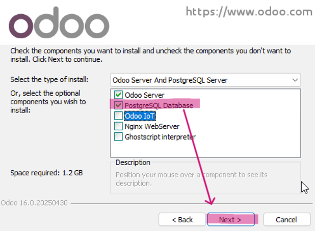
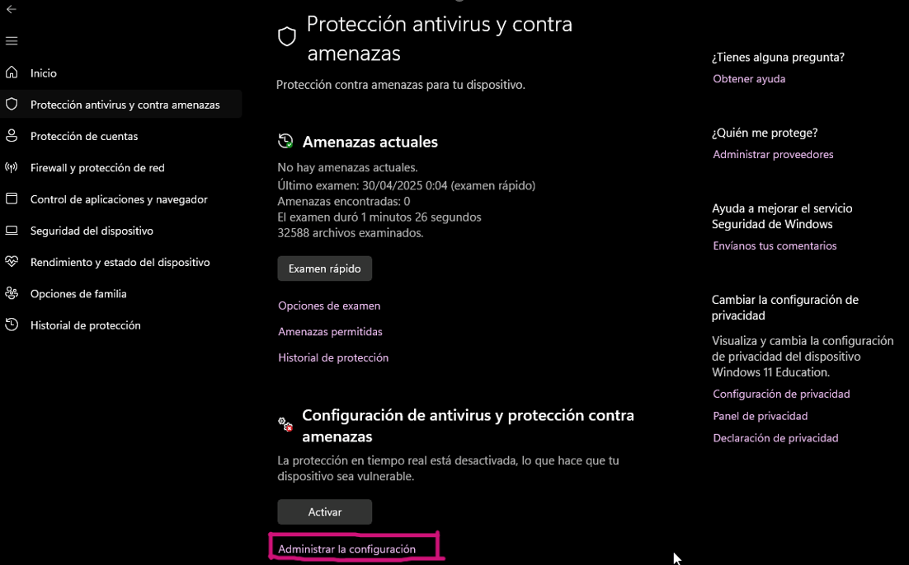
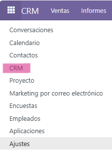

Paso 1: Descargar Odoo:
Ir a la página oficial de descargas de Odoo: https://www.odoo.com/es_ES/page/download y seleccionar la versión Odoo Community 16 para Windows.
En este apartado, deberemos de hacer clic en "Descargar" en la fila de "Windows" y en la columna "Comunity".
Paso 2: Ejecutar el instalador:
- Primero de tod ir a Protección antivirus y contra amenazas.
- Administrar la configuración y desactivar todo temporalmente ya que si no, nos bloquera la ejecución y nos saldrá un error similar a este:
- Ejecutar el instalador descargado.
- Avanzar en el asistente.
- Aceptar los términos de uso.
- Seleccionar PostgreSQL para instalarlo junto a Odoo. 
- Modificar contraseña si se desea y continuar.
- Instalar el programa.
- Finalizar el proceso.

Este es el error que nos aparecera si no desactivamos todo temporalmente.
Lo cual esto es necesario para que no bloquee el instalador de Odoo.
Hacemos doble clic derecho en el instalador y seguidamente hacemos clic en "Ejecutar como administrador".
Para empezar nos aparecerá la siguiente pestaña en la cual seleccionamos el idioma y pulsamos "OK".

Seguidamente, haemos clic en "Next >".

Después, clic en "I Agree".
Aqui muy importante asegurarse de marcar la casilla "PostgreSQL".

Si no queremos modificar la contraseña, hacemos clic en "Next >".

Finalmente, hacemos clic en "Install".

Hacer clic en "Next >" y luego "Finish".

Ya tendremos Odoo instalado correctamente.
Paso 3: Crear una base de datos nueva:
- Acceder a
http://localhost:8069tras la instalación. - Se abrirá la pantalla de creación de base de datos.
- Rellenar los campos:
- Nombre de la base de datos: db_TuNombre
- Email administrador: Tu correo
- Contraseña: Contraseña del administrador
- Idioma y país: Español
Ejemplo de cómo lo hemos hecho nosotros:
Así sería el formulario correctamente rellenado de Nahuel.

Así sería el formulario correctamente rellenado de Paula.
Paso 4: Acceso al panel principal:
Una vez creada la base de datos, se redirige al dashboard principal, para acceder a ella deberemos de colocar el correo y la contraseña creados anteriormente y simplemente hacer clic en "Iniciar sesión".
Inicio de sesión de Nahuel, ponemos nuestro correo y la contraseña creada al inicio y hacemos clic en "Iniciar sesión".
Repetimos le mismo proceso, pero con Paula, ponemos el correo y la contraseña creada anteriormente al incio y hacemos clic en "Log in".
Una vez iniciamos la sesión solo aparece la opción "Aplicaciones".
Menu de Aplicaciones, para instalar un modulo, deberemos de hacerlo desde esta pestaña, simplemente hay que hacer clic en "Activar".
Paso 5: Verificación del entorno:
- Los módulos deben aparecer visibles en el dashboard.
- El menú lateral incluirá más opciones como Contactos, Configuración, etc.
Ventas:

Cuando hacemos clic en los cuadraditos arriba a la izquierda nos aparecerá nuestro modulo en caso de que lo hayamos intalado bien, aqui podemos ver el modulo "Ventas".
CRM:
Por otro lado, hacemos clic en los cuadraditos arriba a la izquierda nos aparecerá nuestro modulo en caso de que lo hayamos intalado bien, aqui podemos ver el modulo "CRM".

Aqui podemos ver lo que nos aparece una vez hacemos clic en el paso anterior en este caso, "Ventas".

Por otro lado, aqui podemos ver lo que nos aparece cuando hacemos clic en el paso anterior en "CRM".
Consejos importantes:
- Desactiva temporalmente Windows Defender si bloquea el instalador.
- Recuerda siempre apuntar la contraseña maestra.